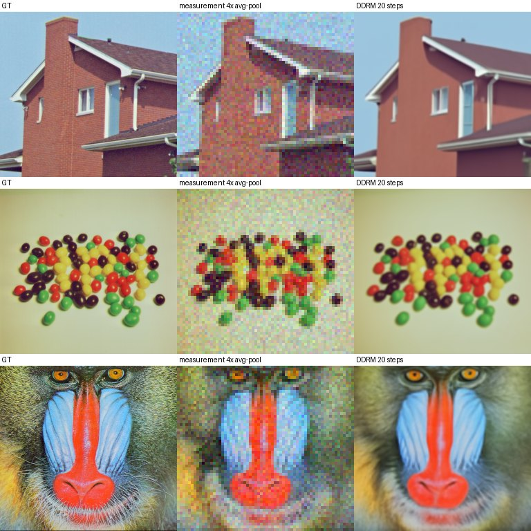

INFERENCE WALKTHROUGH / NOT A REPRODUCTION
20 步跑通，
数字只说明管线是对的。
用作者仓库与 OpenAI ADM 无条件 ImageNet 权重，在 README 指定的 6 张 256×256 分布外自然图上跑两个线性任务：4× 平均池化超分（σ₀=0.05）与 3×3 均匀核去模糊（σ₀=0）。20 步、η=0.85、η_B=1。SR 六张平均 24.49 dB，去模糊 38.24 dB。没有跑 ImageNet 1k 验证集，也没有算 FID/KID/LPIPS，所以与论文 Table 1/2 不可比。
跑了什么
目标只有一个：确认「SVD 谱域扩散 + 三情形逐分量更新」这条管线在真实权重上能跑出像样的图，并记录每一步的输入输出。数据用 README 指定的演示图集（jiamings/ddrm-exp-datasets 的 ood/0/orig_0..5.png，6 张 256×256 RGB），而不是 ImageNet 验证集——后者要下完整 val 集，超出本次流量约束。
两个任务都按论文的任务定义构造：4× 平均池化超分（加 σ₀=0.05 测量噪声）、3×3 均匀核去模糊（无噪）。采样步数 20，与论文主表一致；eta=0.85、etaB=1 取 README 默认与附录 E 的实践值。
环境与改动
官方 environment.yml 是 Python 3.9 + PyTorch 1.10.1 + cu113，在 4090 上不稳，换成 Python 3.10 + torch 2.1.2+cu118 + torchvision 0.16.2 + numpy 1.24.4；只装了运行必需的 numpy/scipy/pyyaml/tensorboard/pillow/tqdm。权重是 openaipublic 的 256x256_diffusion_uncond.pt（2.1 GB），按代码期望的 data/exp/logs/imagenet/ 布局软链进去。
代码改动只有一处：新增 configs/imagenet_256_ood.yml，它是 imagenet_256.yml 的副本，只改数据源三行（subset_1k: False、out_of_dist: True、num_workers: 8），因为 README 的 OOD 分支要配 out-of-dist 数据目录，而默认 config 写死了 1k 清单。算法、采样、超参一行未动。
结果
| 任务 | 步数 | σ₀ | 平均 PSNR（6 张） | 输出目录 |
|---|---|---|---|---|
| 4× 平均池化超分 | 20 | 0.05 | 24.49 dB | data/exp/image_samples/sr4_sigma_0.05/ |
| 3×3 均匀核去模糊 | 20 | 0.0 | 38.24 dB | data/exp/image_samples/deblur_uni_sigma_0.0/ |
每个任务目录都保存 orig_i.png（原图）、y0_i.png（退化观测）、i_-1.png（复原）。6 张一批、20 步，单卡 24 GB 上约 7 s/任务（含加载），显存远未吃满。
这只是小样本推理走查（6 张，非论文 1k 张 ImageNet val），数值不等同论文指标。它只能说明：退化观测被正确构造、复原结果向原图收敛、管线没有数值问题。定性上 SR×4 恢复了轮廓与部分纹理，去模糊几乎与原图无差别（38 dB 量级），与「均匀去模糊病态性低」的预期一致。
样例

没跑的部分与局限
- 没有全量评测：未跑 ImageNet 1k 验证集，未算 FID/KID/LPIPS（缺 inception 统计与全量数据），因此不能与 Table 1/2 的任何数字对照。
- 没有 CelebA-HQ 分支：需另下
celeba_hq.ckpt，不在本次范围。 - 只覆盖两种线性算子：修复、上色、bicubic 超分未跑。
- 超参未调：η=0.85、η_B=1 是 README/附录默认，没有做 η 网格搜索。
- 样本是 OOD 图：这 6 张图用于检验「ImageNet 模型在分布外仍可用」，不是评测集。
文件位置
| 路径 | 内容 |
|---|---|
/data1/kxchen/infer-repro/ddrm/code | 官方仓库 @ 32b6b3c，+ 一个 OOD config 副本 |
.../ddrm/data/exp/image_samples/ | 两个任务的输出（原图 / 观测 / 复原） |
.../ddrm/logs/ | sr4.log、deblur_uni.log |
.../ddrm/RECORD.md | 实验记录与数字出处 |
来源
- 论文（arXiv:2201.11793）与官方仓库。
- 权重：OpenAI guided-diffusion 的
256x256_diffusion_uncond.pt（openaipublic jul-2021，ADM 无条件 ImageNet 256）。 - 本页数字来自服务器端脚本自算的 6 张平均 PSNR（
logs/*.log），未手工改写；样例图由三个输出目录的 PNG 直接拼接。